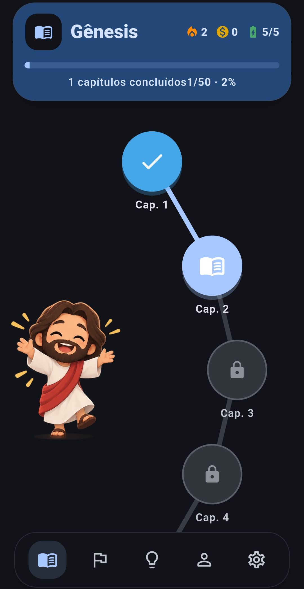
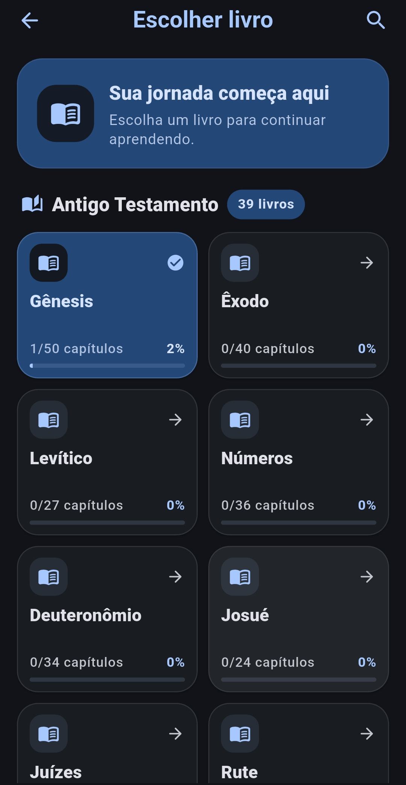
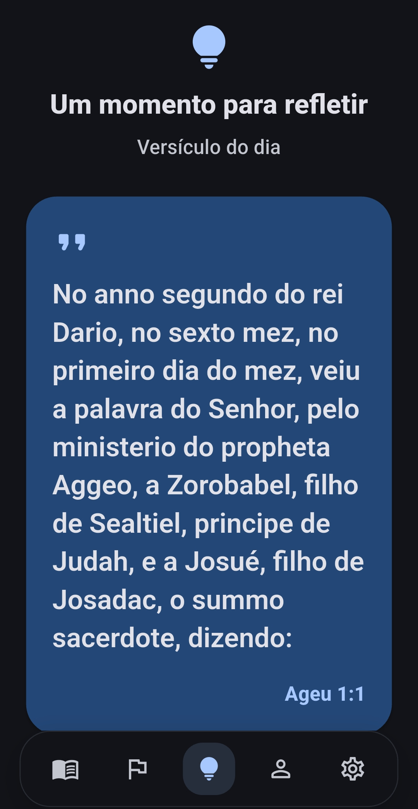
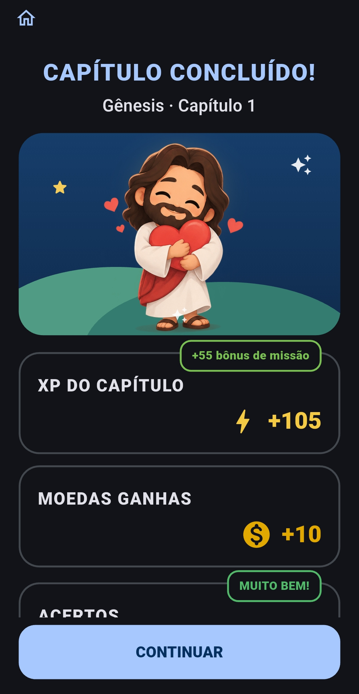
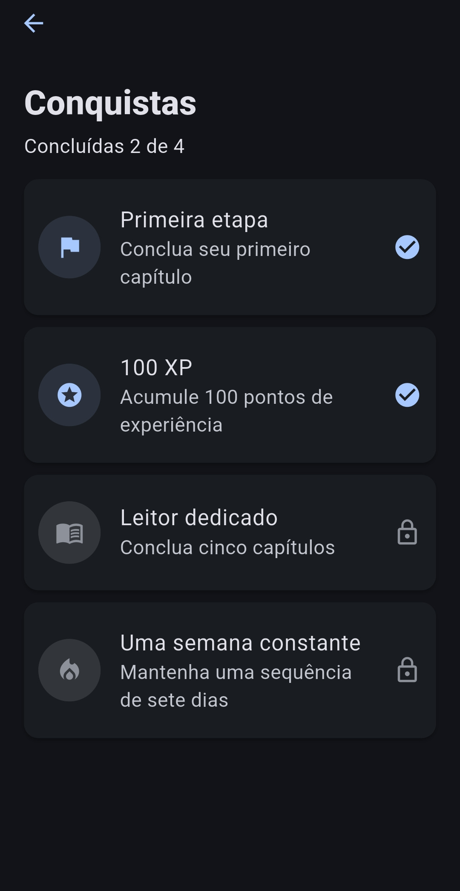
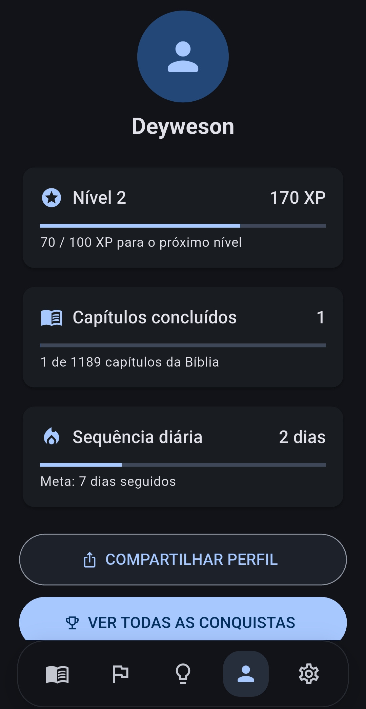

UMA NOVA FORMA DE CAMINHAR
Uma grande
jornada começa
com um capítulo.
Explore a Bíblia no seu ritmo. Aprenda, reflita e avance um passo de cada vez.
EM BREVE NAGoogle Play↗Estamos preparando tudo para você. Em breve.

A PALAVRA, PASSO A PASSO
Descubra uma maneira
mais viva de ler.
Uma experiência feita para transformar pequenos momentos em uma caminhada de fé. Leia, responda, reflita — e celebre cada capítulo concluído.
Encontre seu
próximo capítulo.
Conheça os livros da Bíblia e retome sua leitura com clareza. Cada etapa abre caminho para a próxima descoberta.
CONHEÇA A EXPERIÊNCIA ↗

Um momento
para respirar.
Pensamentos e versículos para acompanhar o seu dia. Um espaço tranquilo para desacelerar e guardar o que falou ao coração.
ENCONTRE SEU MOMENTO ↗UMA CAMINHADA QUE É SUA
Cada passo
conta.
Veja seu progresso ganhar forma, complete missões e celebre o caminho percorrido.



SEU PRÓXIMO PASSO COMEÇA AQUI